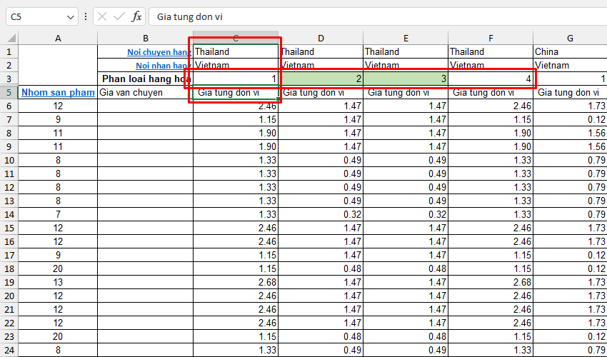
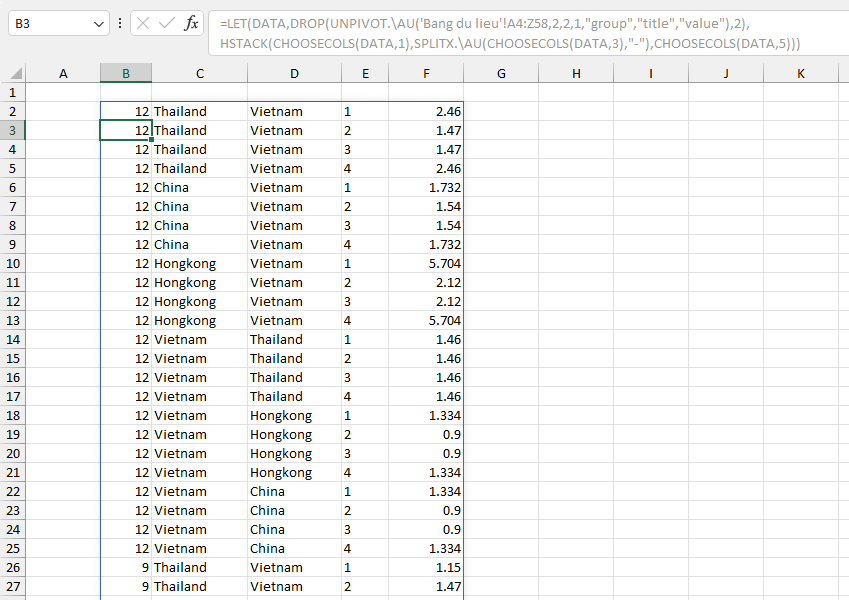

VD1: chuyển đổi kiểu dữ liệu với hàm UNPIVOT 2 cấp độ trước khi tổng hợp bằng hàm GROUP.

VD2: sử dụng truy vấn SQL với từ khóa UNPIVOT.

Đối với các bảng cấp độ lớn hơn 2, tạo hàng mới và thu gom tiêu đề về 2 cấp độ.
Sử dụng các hàm thao tác mảng: HSTACK, CHOOSECOLS, SPLITX để tạo dữ liệu như yêu cầu.
=LET(DATA,DROP(UNPIVOT.\AU(A4:Z58,2,2,1,"group","title","value"),2),HSTACK(CHOOSECOLS(DATA,1),SPLITX.\AU(CHOOSECOLS(DATA,3),"-"),CHOOSECOLS(DATA,5)))
=SQL.AU(A1:D4,"SELECT * FROM TABLE AS P UNPIVOT (VALUE FOR NAME IN ([ADAM],[ALICE])) AS T",1,0)
Related function
PIVOT Một triển khai tương tự với chức năng PIVOTTABLE.
GROUP Phân nhóm bảng dữ liệu dựa trên trường (cột) chỉ định, hỗ trợ tính toán tùy chỉnh.
Return to Home